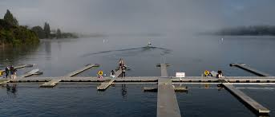
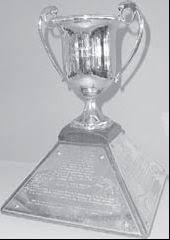
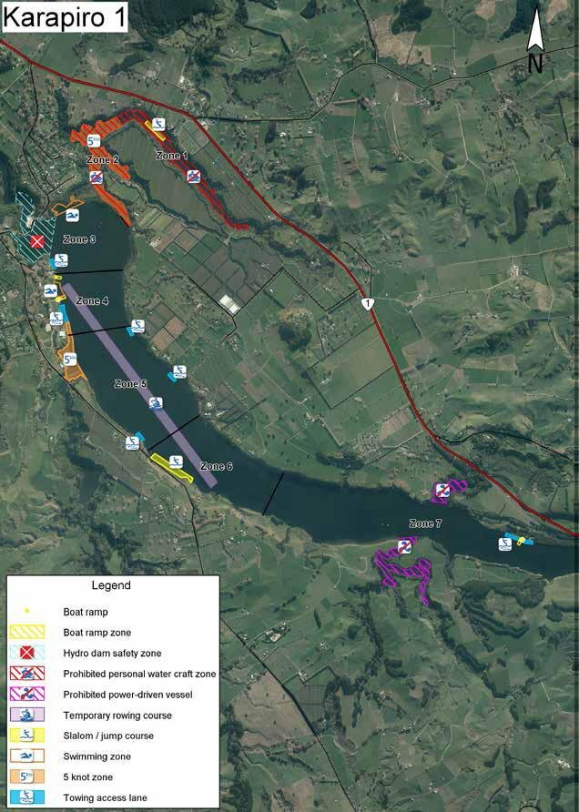

Rowing races in New Zealand happen throughout the summer season, with most major events taking place between November and March. These include school regattas, regional championships, and the national Maadi Cup.
See where and when we compete throughout the rowing season.
Rowing races in New Zealand happen throughout the summer season, with most major events taking place between November and March. These include school regattas, regional championships, and the national Maadi Cup.
This major event is held at Lake Karāpiro and is a stepping stone for many school crews aiming for the Maadi Cup.
The largest school rowing regatta in the Southern Hemisphere, rotating between Lake Karāpiro and Lake Ruataniwha (Twizel).
Many events take place in the Waikato and South Canterbury regions, home to internationally respected rowing lakes.
To see the most up-to-date list of upcoming regattas, visit RowIT: